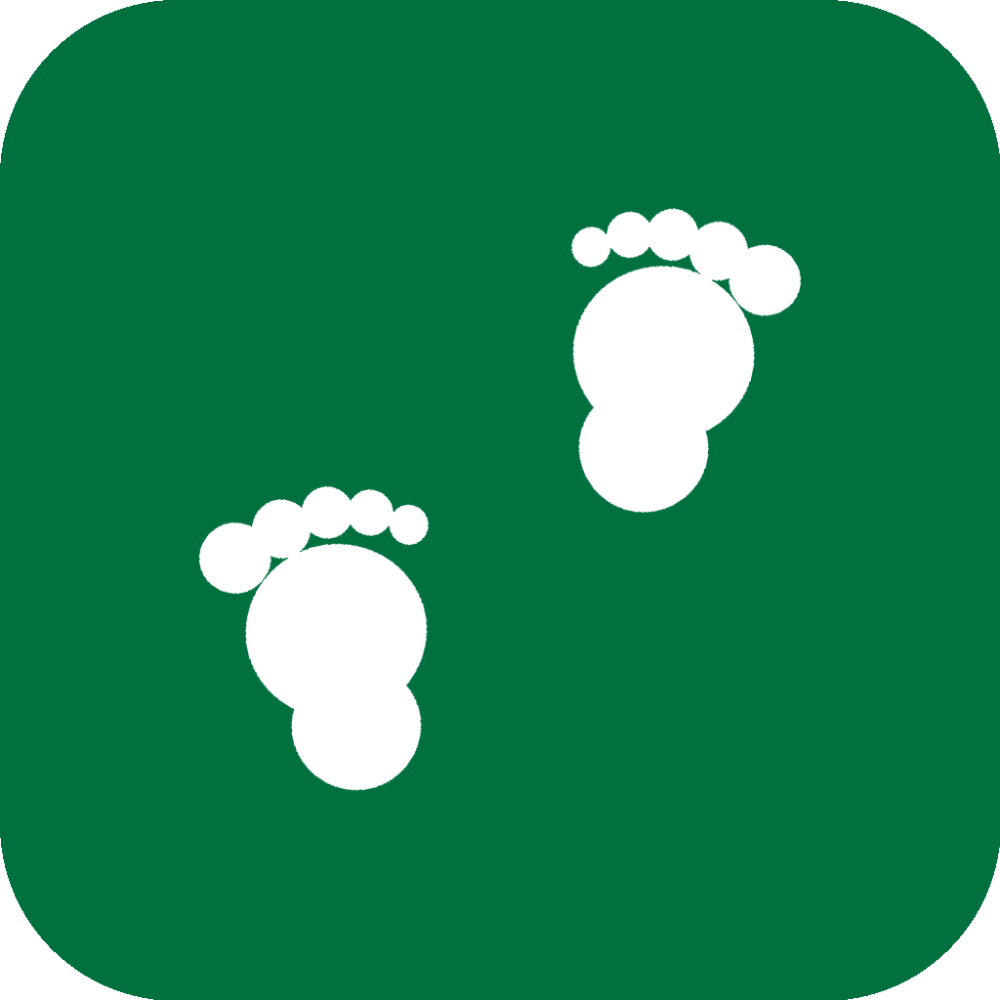

「소아비만 지역별 건강격차 해소를 위한 중재프로그램 개발 및 실증연구」 제3차 정례 워크숍 · 2026. 8. 1.(토)
영유아 비만의 시공간 분석과
중재 후보지역 검토
발생 핫스팟 분석(EHSA) · 다중스케일 시공간 회귀(MGTWR) · 이동기록 앱 '아이걸음' 개발
임창민 (국립공주대학교 지리학과)
·
이현희 (건국대학교 지리학과)
CONTENTS
목차
-
발생 핫스팟 분석(EHSA)과 1차 후보지역 30곳
어느 지역이 꾸준히 높은가 — 선정 방법과 결과
-
다중스케일 시공간 가중 회귀(MGTWR)
왜 그 지역이 높은가 — 지역환경 요인 분석 (본 발표)
-
EHSA × MGTWR 교차 검토
후보지역 우선순위와 프로그램 방향
-
이동기록 앱 '아이걸음' 개발
중재 효과 실측 도구 — 개발 내용과 화면
1부
발생 핫스팟 분석(EHSA)과
1차 후보지역 30곳
한 해 수치가 아니라 13년(2012–2024)의 흐름 — 우연히 한 번 높은 곳과 꾸준히 높은 곳을 구분.
발생 핫스팟 분석이란인터랙티브 지도선정 방법과 결과후보지역 30곳 리스트
1부 · 01 METHOD
발생 핫스팟 분석(Emerging Hotspot Analysis, EHSA)이란
- 한 해 지도만 보면 우연히 높은 곳과 꾸준히 높은 곳을 구분할 수 없음
- EHSA는 매년 시군구마다 "주변보다 유의하게 높은가"(Getis-Ord Gi*)를 계산하고,
그 13년(2012–2024) 흐름을 추세 검정(Mann-Kendall)과 결합해 패턴을 분류하는 방법
- 자료: 영유아 건강검진 시군구 집계 · 지표 3종 — 비만율(%) · 과체중이상율(%) · 비만 아동수(명)
Gi* =
( Σj wij xj −
X̄ Σj wij ) /
S·√[(nΣjw²ij − (Σjwij)²)/(n−1)]
기호 클릭: 뜻 팝업
wij = 이웃이면 1, 아니면 0 · n = 시군구 수.
매년 산출한 Gi* z-점수 13년 치의 추세·지속성으로 아래 패턴을 판정 (ArcGIS Emerging Hot Spot Analysis 방식).
지속형 PH13년 내내 핫스팟 — 가장 뿌리 깊은 곳
연속형 CH최근 몇 년 연속 핫스팟, 끊김 없음
심화형 IH핫스팟 강도가 해마다 세지는 중
신규형 NH2024년에 처음 등장
산발형 SH켜졌다 꺼졌다 반복 — 그래도 요주의
반대 패턴(콜드스팟 Cd, 파란 계열)과 무패턴(NP)도 같은 방식으로 분류. 발표는 핫스팟 중심.
1부 · 02 MAP
분석 결과 지도 — 지난 워크숍에서 시연한 웹지도
전국 + 11개 권역 탭 · 연도별 핫스팟 / EHSA 패턴 모드 · 지표 3종 · 연도 슬라이더 2012–2024 — 이 결과를 바탕으로 후보지역을 선정 →
1부 · 03 SELECTION
선정 방법과 결과 — 1차 후보지역 30곳
선정 규칙
- ① 고비율 축 — 비만율 또는 과체중이상율이 핫스팟인 시군구를 군집 강도 순으로 (비만 아동 20명 이상 우선)
- ② 규모 축 — 비만 아동수가 핫스팟인 시군구를 13개년 평균 군집 강도 순으로
- ③ 권역 대표성 — 인접 핫스팟은 하나의 군집 → 군집별 대표 지역만 선정(중복 배제)
- ④ 전략 거점 — 도농복합 거점 1곳(원주)을 통계 축과 별도로 포함
결과 요약
- 구성: 고비율 축 16 · 규모 축 13 · 전략 거점 1 = 총 30개
- 권역 분포: 수도권 11 · 충청 6 · 강원 5 · 경북 4 · 전라 2 · 제주 2
- 두 축의 공간 대비 — 고비율 축은 농촌·산간(강원 산간, 충북 남부, 충남 서해안, 경북 북부·동해안, 전남 서남부, 제주),
규모 축은 수도권·대도시(인천, 부천, 경기 서남부, 서울 서남·동북)
- 비율 높은 곳과 아동 많은 곳이 분리되어 있어 두 축을 함께 반영
특기 지역
- 보령·서천(충남 서해안) — 비만율은 무패턴이나 과체중이상율이 핫스팟인 조기 신호 지역
- 제주시 — 고비율(두 비율 지표 모두 핫스팟)과 규모(아동 307명)를 겸비
- 포항 북구 — 드문 도시형 고비율 핫스팟(아동 151명)
- 원주 — 통계적 군집은 아니나 강원 최대 도농복합 거점, 도심·농촌 공존으로 건강격차를 압축 검증 가능
1부 · 04 LIST
1차 후보지역 리스트 (30개)
| 연번 | 권역 | 시군구 | 선정 축 |
비만율(%) | 과체중이상율(%) | 비만 아동수(명) |
|---|
| 1 | 충청 | 옥천군 | 고비율(양지표) | 14.5 SH | 25.2 SH | 23 Cd |
| 2 | 충청 | 영동군 | 고비율(양지표) | 23.0 SH | 29.3 CH | 29 Cd |
| 3 | 충청 | 아산시 | 규모 | 10.0 NP | 18.4 NP | 241 CH |
| 4 | 충청 | 천안시 서북구 | 규모 | 9.6 NP | 17.6 NP | 228 CH |
| 5 | 충청 | 보령시 | 고비율(과체중) | 14.7 NP | 25.0 SH | 46 Cd |
| 6 | 충청 | 서천군 | 고비율(과체중) | 19.8 NP | 30.6 SH | 22 NP |
| 7 | 강원 | 강릉시 | 고비율(양지표) | 14.3 PH | 21.6 CH | 125 NP |
| 8 | 강원 | 정선군 | 고비율(양지표) | 17.5 PH | 24.7 PH | 17 Cd |
| 9 | 강원 | 평창군 | 고비율(비만) | 13.5 PH | 23.9 NP | 13 Cd |
| 10 | 강원 | 영월군 | 고비율(비만) | 12.6 SH | 18.9 NP | 14 Cd |
| 11 | 강원 | 원주시 | 전략(도농복합) | 10.1 NP | 18.7 NP | 177 NP |
| 12 | 수도권(서울) | 강서구 | 규모 | 7.9 Cd | 16.0 Cd | 161 IH |
| 13 | 수도권(서울) | 구로구 | 규모 | 7.7 Cd | 15.2 Cd | 136 PH |
| 14 | 수도권(서울) | 노원구 | 규모 | 8.2 Cd | 15.4 Cd | 135 PH |
| 15 | 수도권(경기·인천) | 화성시 | 규모 | 8.2 Cd | 16.1 Cd | 603 IH |
| 16 | 수도권(경기·인천) | 남양주시 | 규모 | 9.8 NP | 17.6 NP | 396 CH |
| 17 | 수도권(경기·인천) | 평택시 | 규모 | 10.4 NP | 19.1 NP | 392 IH |
| 18 | 수도권(경기·인천) | 인천 서구 | 규모 | 8.6 NP | 16.6 NP | 350 PH |
| 19 | 수도권(경기·인천) | 시흥시 | 규모 | 9.6 NP | 17.7 NP | 350 IH |
| 20 | 수도권(경기·인천) | 인천 남동구 | 규모 | 10.5 NP | 19.1 NP | 219 IH |
| 21 | 수도권(경기·인천) | 인천 부평구 | 규모 | 9.7 NP | 18.1 NP | 212 PH |
| 22 | 수도권(경기·인천) | 부천시 소사구 | 규모 | 10.6 NP | 18.8 NP | 136 PH |
| 23 | 전라 | 목포시 | 고비율(양지표) | 14.8 SH | 23.4 SH | 142 NP |
| 24 | 전라 | 무안군 | 고비율(양지표) | 15.3 SH | 25.1 SH | 73 NP |
| 25 | 경북 | 울진군 | 고비율(양지표) | 17.8 SH | 32.9 SH | 33 Cd |
| 26 | 경북 | 청송군 | 고비율(양지표) | 23.5 SH | 39.2 SH | 12 Cd |
| 27 | 경북 | 영양군 | 고비율(양지표) | 22.6 SH | 29.1 SH | 7 Cd |
| 28 | 경북 | 포항시 북구 | 고비율(양지표) | 10.2 SH | 19.0 SH | 151 NP |
| 29 | 제주 | 제주시 | 고비율(양지표) | 10.7 SH | 20.0 SH | 307 NP |
| 30 | 제주 | 서귀포시 | 고비율(양지표) | 11.5 SH | 21.8 SH | 90 NP |
셀 표기 = 2024년 값 + EHSA 패턴 약어 (PH 지속형 · IH 심화형 · CH 연속형 · SH 산발형 / NP 무패턴 / Cd 콜드스팟).
선정 축: 고비율(양지표) = 두 비율 지표 모두 핫스팟 · 고비율(과체중/비만) = 해당 지표만 핫스팟 · 규모 = 아동수 핫스팟.
군집 강도(z)는 첨부 엑셀 수록.
2부
다중스케일 시공간 가중 회귀
(Multiscale Geographically and Temporally Weighted Regression, MGTWR)
지역환경 요인의 효과가 지역마다·해마다 어떻게 다른지 직접 추정 — 왜 그 지역이 높은가.
연구 질문자료·변수방법론모형 성능작동 스케일계수 지도결과·한계·결론
2부 · 01 INTRODUCTION
연구 질문
-
어떤 지역사회 환경 요인이 시군구 영유아 비만율·과체중이상율과 연관되는가?
-
그 효과는 공간적으로, 그리고 시간적으로 어떻게 이질적인가?
-
각 요인은 어떤 작동 스케일에서 움직이는가 — 국지적인가 전역적인가? 해마다 변하는가 일정한가?
-
(부가) 코로나19 전후로 지역환경 효과의 구조는 어떻게 변화했는가?
2부 · 02 DATA
자료와 변수
- 종속변수: 영유아 건강검진 시군구 비만율·과체중이상율
- 독립변수: KOSIS 21종 후보 → 이론·다중공선성 진단으로 7종 선정
2부 · 03 METHODS
방법론 — 모형별 비교
| 모형 | 지역별 계수 | 시기별 계수 | bandwidth 구조 | 요약 |
|---|
| OLS | × | × | — | 전국·전기간 공통 계수 |
| GWR | ○ | × | 공통 1개(공간) | 지역별 계수, 단일 평활 |
| MGWR | ○ | × | 변수별(공간) | 변수별 공간 스케일 |
| GTWR | ○ | ○ | 공통 1개(시공간) | 시간 이질성 도입 |
| MGTWR | ○ | ○ | 변수별(bw + τ) | 작동 스케일 직접 식별 |
yi =
Σj βj(ui, vi, ti;
bwj,
τj)·xij +
εi,
d²ST =
d²S +
τ·d²T
기호 클릭: 뜻 팝업 · 빈 곳 클릭: 전체 설명 ▼
| 기호 | 의미 |
|---|
| yi | 관측치 i(특정 시군구·특정 연도)의 비만율(표준화) |
| βj(ui, vi, ti) |
변수 j의 회귀계수 — 위치(u, v)와 시점(t)에 따라 달라질 수 있음 |
| xij | 관측치 i의 변수 j 값(표준화) |
| bwj | 변수 j의 공간 bandwidth: 계수를 추정할 때 빌려 쓰는 이웃 관측치 수 |
| τj | 변수 j의 시간 스케일: 다른 연도 정보를 얼마나 차단할지(클수록 해마다 다르게 추정) |
| d²ST | 시공간 거리² = 공간 거리² + τ × 시간 거리² — 가까운 관측치일수록 큰 가중 |
| εi | 오차항 |
- 적응형 bisquare 커널 · backfitting 추정 (Wu et al. 2019)
- 로컬 계수 유의성: 변수별 유효모수 보정 임계 t 적용 (Yu & Fotheringham 2025)
2부 · 04 DIAGNOSTICS
왜 공간 모형인가 — 공간적 자기상관 검정
- 전 연도 유의한 양(+)의 Moran's I (p ≤ 0.001)
- 군집성 정점은 코로나 시기(2020–21)
- → 관측치 독립을 가정하는 전역 OLS는 부적합
종속변수의 전역 Moran's I (연도별)
999회 순열검정, 전 연도 p ≤ 0.001.
2부 · 05 BASELINE
기준 모형: 전역 OLS
설명력 R² 0.361/0.351에 그치고, 잔차에 공간 자기상관이 남는다.
| 변수 | β (비만율) | t | β (과체중+) | t |
|---|
| 기초생활수급률 | +0.297 | 13.07*** | +0.270 | 11.78*** |
| 1인가구비율 | +0.276 | 11.04*** | +0.145 | 5.77*** |
| 조이혼율 | +0.129 | 7.03*** | +0.169 | 9.13*** |
| 인구밀도 | −0.243 | −8.96*** | −0.229 | −8.37*** |
| 청년순이동률 | −0.128 | −6.07*** | −0.112 | −5.30*** |
| 의사수 | −0.106 | −5.10*** | −0.084 | −4.03*** |
| 아파트비율 | +0.205 | 7.08*** | +0.025 | 0.86 n.s. |
z-표준화 계수, n=2,061. *** p<0.001 (아파트비율은 비만율 모형에서만 유의).
2부 · 06 MODEL COMPARISON
모형 성능: 시간 이질성 > 공간 이질성
- 두 모형 모두 MGTWR 최종 우위 — 잔차 공간 자기상관 사실상 해소
- 공간 이질성 반영(OLS→GWR): AICc 274 개선 · 시간 이질성 추가(GWR→GTWR): 593 추가 개선
- → "지역 차이"보다 "시기 차이"의 기여가 더 컸다
왜 "시기 차이"가 더 컸나?
- 분석 기간에 비만율 수준 자체가 요동: 전국 평균 8.4%(2015) → 15.6%(2021) → 11.6%(2023)
- 기저 위험(표준화 절편)도 −0.73 → +0.85로 약 1.6 SD 이동 — 같은 지역도 해에 따라 전혀 다른 상태
- 공간만 허용(GWR)하면 계수가 9년 평균으로 뭉개짐 → 시간 가변 허용(GTWR)에서 적합 급개선
2부 · 07 RESULTS I
변수별 작동 스케일 — 변수마다 힘이 미치는 범위가 다르다
① 국지·시기 가변형
수급률(+) · 조이혼율(+)
청년순이동(−) · 아파트(−)
좁은 권역에서, 해마다 다르게
→ 지역·시기 맞춤 개입
② 국지·시기 안정형
인구밀도(±)
지역마다 다르지만 9년 내내 일정
→ 구조적 변수
③ 전국 공통형
1인가구 · 의사수
어디서나, 어느 해든 같은 효과
→ 전국 단위 정책
읽는 법 — bw · τ · 유효모수(ENP)
- bw = 계수 추정에 빌려 쓰는 이웃 수 — 32면 좁은 권역(국지적), 1,769면 사실상 전국(공통)
- τ = 다른 연도 정보의 차단 정도 — 크면 해마다 가변, 0에 가까우면 9년 내내 안정
- ENP = 사실상의 검정 횟수 — 많을수록 유의 기준(임계 t)을 엄격하게 보정
2부 · 08 RESULTS II
로컬 계수 지도 (보정 유의성 마스킹)
변수
2부 · 09 RESULTS III
변수별 공간·시간 패턴 요약 — 두 모형 공통 구조
| 변수 | 공간 패턴(유의 지역) | 비만율 모형 변화 | 과체중이상율 모형 변화 | 해석 |
|---|
| 절편(기저위험) | 2021 전면 양(+), 남서부 최대 | −0.73 → +0.85 → +0.39 | −0.56 → +0.73 → +0.02 | 기저 위험의 전국 상승·부분 회복 |
| 수급률 | 강원 영동·전남 남해안·제주 | +0.14 거의 불변 | +0.12 거의 불변 | 결핍 효과는 상시 지속 |
| 조이혼율 | 수도권–강원 벨트 | +0.10 → +0.19 강화 | +0.15 → +0.19 강화 | 가족구조 취약성 심화 |
| 청년순이동 | 영남 내륙(유출 지역) | −0.02 → −0.09 강화 | −0.04 → −0.07 강화 | 지역쇠퇴-아동건강 연계 |
| 아파트비율 | 남부·동부 광역(70% 유의 −) | −0.18 → −0.25 강화 | −0.26 → −0.29 강화 | 전역모형의 착시(+) 해소 사례 |
| 인구밀도 | 내륙 중소도시 + / 대도시권 − | 시기 안정(+0.07) | 시기 안정(+0.11) | 도농 상이 기전 |
| 1인가구·의사수 | 준상수(전국 공통) | 시기 안정(−0.02/−0.04) | 시기 안정(−0.08/−0.02) | 전국 공통 효과 |
2부 · 10 RESULTS IV
코로나19가 증폭시킨 지역환경 효과
- 기저 위험(절편)은 회복 중
- 시기 가변 4개 변수의 기울기는 강화된 채 유지
- → "새 위험"이 아니라 기존 격차의 증폭
지역 기저위험(절편) 궤적
이전(15–19) → 이후(20–23) 평균 β
2부 · 11 SUMMARY OF FINDINGS
결과 총 요약
- 지역환경 요인은 영유아 비만과 체계적으로 연관
위험: 수급률(+)·조이혼율(+) / 보호: 아파트(−)·청년 유입(−)·의사수(−)
- 효과는 시공간적으로 이질적 — 핵심은 시간 이질성
설명력 36% → 75%, 잔차 공간 자기상관 해소
- 작동 스케일 세 유형 = 정책의 스케일
국지·가변 4개(결핍·가족·활력·주거) / 국지·안정 1개(밀도) / 전국 공통 2개(1인가구·의사수)
- 코로나는 격차를 증폭 — 아직 닫히지 않음
기저 위험은 회복 중, 기울기는 강화된 채 유지
- 전역 모형의 함정 확인
아파트(+→−)·1인가구(+→준상수) — 공간 교란은 정책 방향까지 뒤집는다
2부 · 12 LIMITATIONS
연구의 한계
- 생태학적 설계 — 지역 수준 연관 ≠ 개인 수준 결론(생태학적 오류) → 개인 자료 연계가 후속 과제
- 공간 단위 임의성(MAUP) — 경계 설정·읍면동 단위에 따라 결과 변동 가능
- 미관측 교란 — 식품환경·보육환경·부모 건강행태 미포함
2부 · 13 CONCLUSIONS
2부 결론
"소아비만 대책은 전국 일률이 아니라,
어느 지역에서 · 어느 시기에 · 어떤 힘이
작동하는지에 맞춰야 한다."
- 지역환경 효과는 시공간적으로 이질적 (설명력 36% → 75%)
- 변수의 스케일 = 정책의 스케일: 결핍·가족·활력·주거는 시군구 맞춤, 의료·가구구조는 전국 단위
- 코로나가 키운 격차는 아직 닫히지 않았다 — 표적 개입의 근거 강화
3부
EHSA × MGTWR 교차 검토
— 어디부터, 무엇을 바꿀 것인가
후보지 30곳에서 실제로 어떤 환경 요인이 작용하는지 확인 → 우선순위와 프로그램 방향 결정.
왜 함께 보나핵심 발견우선순위 지도그룹 제안요인별 방향
3부 · 01 WHY
왜 함께 보나 — 두 분석의 역할이 다르다
EHSA — 어디가?
- 비만 문제가 어느 지역에 꾸준히 몰리는지 확인
- 비만율·과체중이상율·아동수의 12년 시공간 군집
- → 후보지 30곳 선정의 근거
×
MGTWR — 왜? 무엇을?
- 그 지역에서 어떤 환경 요인이 작용하는지 식별
- 지역·시기별 유의 요인 (수급률·이혼율·청년이동·아파트)
- → 무엇을 바꿀지, 프로그램 내용의 근거
- 문제가 몰린 곳(EHSA) × 바꿀 수 있는 요인(MGTWR) = 우선순위와 프로그램 설계를 한 번에
- "꾸준한 요인" 기준: 보정 유의성 검정에서 2020–23년 4년 중 절반 초과 유의
3부 · 02 KEY FINDING
선정 축과 환경 요인이 정확히 맞물린다
| 선정 축 | 꾸준히 유의한 요인 (MGTWR) | 의미 |
|---|
고비율 축 16곳
(농촌·산간) |
아파트(−) 16곳 전부 · 수급률(+) 10곳 · 청년이동(−) 6곳 |
저소득·지역 쇠퇴·주거환경이 실제로 작용
→ 환경을 바꾸는 중재의 여지가 큼 |
규모 축 13곳
(수도권·대도시) |
이혼율(+) 13곳 전부 — 사실상 하나의 요인 |
가족구조 경로가 공통
→ 표준 프로그램을 크게 적용 |
| 전략 거점 원주 |
꾸준한 요인 1개(청년이동−) · 2023년 유의 요인 없음 |
통계 근거는 약함
→ 검증·비교 거점으로 활용 |
- 서로 독립적인 두 분석이 같은 공간 구도로 수렴 → 후보지의 두 축 구성은 타당
- 여기에 "요인이 몇 개나 겹치는가"를 더하면 우선순위 그룹(A·A′·B·C)이 나온다 — 다음 슬라이드
3부 · 03 PRIORITY
우선순위 제안 — 그룹을 가르는 기준은 "겹치는 요인 수" 하나
| 동시에 작용하는 꾸준한 요인 | 3개 | 2개 | 1개 (규모 축 공통) | 1개 (그 외) |
|---|
| 그룹 | A 최우선 | A′ 우선 | B 규모 효율 | C 단일·전략 |
A — 요인 3개 (5곳)
옥천 · 영동 · 영월
울진 · 영양
결핍 + 지역쇠퇴 + 주거가
한 지역에서 동시 작용
가장 복합적인 취약지 → 최우선
A′ — 요인 2개 (9곳)
강릉 · 정선 · 평창 · 목포 · 무안
제주시 · 서귀포 · 아산 · 천안
A보다 한 겹 적음
(수급률+아파트 / 이혼율+아파트)
두 번째 순위
B — 이혼율 하나 (11곳)
수도권 규모 축
(화성 603명 · 평택 · 시흥 우선)
13곳 공통 단일 요인
표준 프로그램 대량 적용
C — 그 외 (5곳)
보령 · 서천 · 청송 · 포항 북구
+ 원주(전략)
아파트(−) 단일 처방
원주는 검증 거점
A와 A′의 차이 = 겹치는 요인이 3개냐 2개냐. 요인이 많이 겹칠수록 복합 취약 → 순위 상향. 기준은 협의로 조정 가능(별첨 엑셀).
3부 · 04 MAP
후보지 30곳 — 우선순위 그룹 지도
A 최우선 (요인 3개)
A′ 우선 (요인 2개)
B 규모 효율 (이혼율 하나)
C 요인 하나·전략
비후보
지역 클릭 → 축·요인 팝업
3부 · 05 INTERVENTION
요인별 개입 방향 — 요인이 프로그램의 내용을 정한다
| 꾸준한 요인 | 해당 후보지 | 개입 방향 |
|---|
| 기초생활수급률(+) | 강원 영동권 4 · 전남 2 · 울진·영양 · 제주 2 |
저소득 가정 영양·신체활동 지원 (바우처·급식 질) 상시 운영 |
| 조이혼율(+) | 수도권 13곳 전부 + 충청 북부(아산·천안·옥천·영동) |
한부모·맞벌이 가정 아동 돌봄·생활습관 프로그램 |
| 청년순이동(−) | 옥천·영동·영월·울진·청송·영양 |
지역활력·정주여건 사업과 아동건강 사업 연계 |
| 아파트비율(−) | 고비율 축 전부 |
비아파트 주거지 중심 놀이·활동 공간 조성 |
같은 "비만율 높은 지역"이라도 작용하는 요인이 다르면 프로그램의 내용이 달라져야 함.
3부 · 06 FEASIBILITY
통계 밖의 세 번째 축 — 실행 가능성
- 통계가 정한 우선순위 ≠ 곧바로 시행 순서 — 중재 프로그램은 지역이 받아 줘야 시작됨
- 실행 요건: 지자체·교육청·어린이집·보건소 협력 체계 · 참여 아동 모집 여건 · 연구진 접근성 — 통계만큼 결정적
실행 여건이 뒷받침되는 후보지
- 아산·천안(규모 축) — 비만 아동 규모 상위(241·228명)이면서 연구진 거점 인접
→ 지역 컨택·상시 방문 관리가 용이한 시범 적용 1순위 여건
- 원주(전략 거점) — 강원 최대 도농복합 도시. 한 도시 안에서 도심·농촌 비교가 가능하고
협력 기반 확보 시 검증·대조 거점으로 최적
최종 선정 원칙 (제안)
- 최종 시행 지역 = 통계적 우선순위 × 실행 가능성의 교집합
- 통계 축 후보라도 협력이 어려우면 후순위 조정
- 통계 축 밖이라도 실행 여건이 뛰어난 지역은 시범·대조 지역으로 포함 가능
— "공간분석 근거 + 현실 여건 보완"의 두 축으로 선정 논리 제시
"어디가 필요한가는 통계가, 어디서 시작할 수 있는가는 현장이 정한다 —
두 답이 겹치는 곳(아산·천안, 원주)부터 여는 것이 현실적 경로."
4부
이동기록 앱 '아이걸음' 개발
— 중재 효과를 어떻게 잴 것인가
어디에(1부) · 왜(2부) · 무엇을(3부)에 이어, 남은 질문 하나 — "프로그램이 실제로 아이의 하루를 바꾸는가".
이를 실측할 연구용 앱을 직접 개발.
개발 개요개발 화면 — 기록 흐름개발 화면 — 안정성·전송배포 현황
4부 · 01 DEVELOPMENT
무엇을 어떻게 만들었나 — 요구사항과 설계

아이걸음
Flutter 자체 개발 · v1.1.2 (8차 빌드) · Android 8.0+ · 51MB
- 목표: 보호자·아동이 쓸 수 있는 가장 단순한 실측 도구 — 참가자 번호 입력 + 버튼 하나
- 산출 지표: 이동 거리 · 활동 반경 · 바깥 활동 시간 (중재 전후 비교용)
- 수집 파일: GPX·KML — GIS 분석에 바로 투입
- 개인정보: 기기 내 저장, 보호자가 '보내기'를 누른 경우에만 전송
핵심 개발 내용
| 요구사항 | 구현 |
|---|
| 3초 간격 정밀 기록 | 고정 간격 위치 스트림 (geolocator) |
| 화면 꺼져도 하루 종일 | 포그라운드 서비스 + 별도 isolate
(flutter_foreground_task) — 백그라운드 생존의 핵심 |
| 앱이 죽어도 기록 보존 | 좌표 수신 즉시 로컬 DB 저장(sqflite)
— 유실 최대 1개 지점 |
| 중단 감지·복구 | 재실행 시 중단 시각 안내 + 안전 저장 확인 배너 |
| 기종별 배터리 제한 대응 | 삼성 등 절전 설정 안내 카드 내장 |
| 간편 전송 | 세션별 GPX·KML / 전체 기록 ZIP 일괄 —
카카오톡·메일 공유 시트 (share_plus·archive) |
| 연구 브랜딩 | 3개 대학 심볼 스플래시 · 과제명 표기
(Android 12 대응 이중 스플래시) |
4부 · 02 SCREENS
개발 화면 ① — 하루의 기록 흐름
조작은 시작·종료 두 번이 전부. 기록 중에는 "정상 기록 중 (마지막 수신 n초 전)"으로 작동 여부를 즉시 확인.
4부 · 03 SCREENS
개발 화면 ② — 안정성과 전송 (개발 비중이 가장 컸던 부분)
중단 감지 — 중단 시각 안내·안전 저장
+ 삼성 배터리 설정 안내 카드
전체 기록 ZIP 일괄 공유
(P001_전체기록_날짜.zip)
현장 변수(절전 강제 종료·앱 밀어서 끄기·배터리 부족)를 가정한 방어 설계 — 어떤 경우에도 그때까지의 기록은 보존.
4부 · 04 ROLLOUT
배포 현황 — 안드로이드 배포 시작, iOS 준비 중
1
🌅
아침 — 기록 시작
집을 나서기 전 앱을 열고
기록 시작 버튼
2
🏫
하루 종일 — 자동
조작 불필요
화면이 꺼져도 계속 기록
3
🌙
저녁 — 종료·보내기
귀가 후 기록 종료 →
보내기로 연구팀 전송
배포 상태
- 안드로이드: v1.1.2 APK 배포 중 — 다운로드 페이지 + 설치 매뉴얼 + FAQ + 참가자 안내문 완비
- 아이폰(iOS): 개발 완료 · 클라우드 빌드 파이프라인 구축 — TestFlight 배포 준비 중
- 하루 기록 배터리 사용 15~30% 수준 확인
🔒
개인정보 — 위치 기록은 휴대폰 안에만 저장, 자동 전송 없음.
보호자가 직접 '보내기'를 눌렀을 때만 연구팀에 전달, 연구 목적 사용 후 폐기.
다운로드
건국대 · 국립공주대 · 순천향대
연구단 공동 활용
SUMMARY
결과 종합
- EHSA — 1차 후보지역 30곳 (고비율 축 16 · 규모 축 13 · 전략 거점 1)
고비율 축은 농촌·산간, 규모 축은 수도권·대도시에 형성 — 두 축이 공간적으로 분리
- MGTWR — 지역환경 효과는 시공간적으로 이질적 (설명력 36% → 75%)
위험: 수급률(+)·조이혼율(+) / 보호: 아파트(−)·청년 유입(−)·의사수(−) · 코로나 이후 효과 강화 유지
- 교차 검토 — 선정 축과 환경 요인이 맞물림
고비율 축=결핍·쇠퇴·주거 요인, 규모 축=가족구조 요인 · 겹치는 요인 수 기준 A 5 · A′ 9 · B 11 · C 5 ·
최종 시행은 실행 가능성(협력·접근성)과의 교집합에서 — 아산·천안, 원주 우선 여건
- 아이걸음 — 중재 전후 활동 실측 도구 개발 완료
안드로이드 v1.1.2 배포 중 · iOS TestFlight 준비 · 3초 간격 GPS, 기기 내 저장, GPX·KML·ZIP 전송
Q & A
감사합니다
임창민 (국립공주대학교 지리학과) · 이현희 (건국대학교 지리학과)